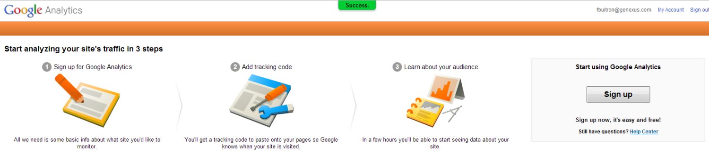
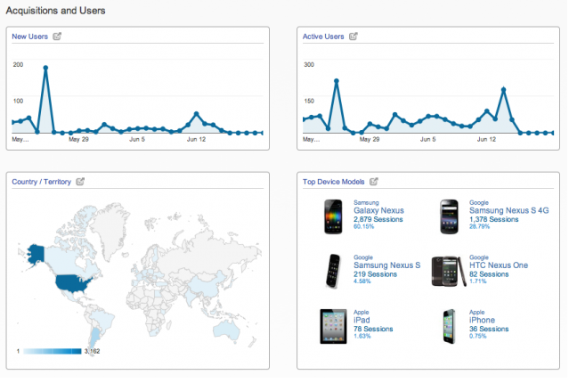
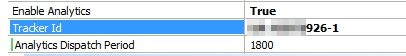

Google Analytics is commonly used by marketers and decision makers worldwide to have as much information as possible to improve an application's UX and navigability, or just to focus on part of the application that is not receiving enough attention from users.  In GeneXus, this service for Smart Device Applications can be easily enabled. As a result, developers and decision makers can quickly gain insight into what users do with the app, including which screens are the most used, where the app's users come from, how long they stay on each screen, and many more useful details to take into account when developing new upgrades or solving design issues. To take full advantage of this service you can start reading here  Setting Google Analytics on a Smart Device Application:Step 1:Get Tracking IDSteps to get Google Analytics Tracking Code Step 2: Enable Analytics on the Smart Device ApplicationOnce you have a tracking ID, open the Main Object of your app and set the Enable Analytics Property to true.  Important Note: the tracking ID can be shared by many versions of an application or even shared among different applications. These settings will allow the account owner to see usage statistics of the applications that share the same tracking ID. Note: As of GeneXus 16 upgrade 2 to use Google analytics, you need to set the property Analytics Provider = Google Analytics. |
| Backlinks | |
| Analytics external object | |
| Toc:Native Mobile Applications Development | Native Mobile Main object properties |